Visual Journey at Kudy
Take a visual stroll through our hand-plated dishes, curated interior design, and beautiful rooftop atmosphere.
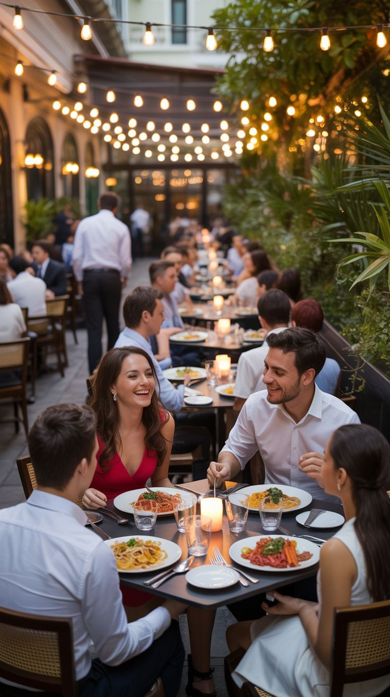
Evening Under the LightsFriends and families sharing dinner outdoors beneath warm string lights.
Moments Worth SharingGood food, great company and plenty of laughter around the table.
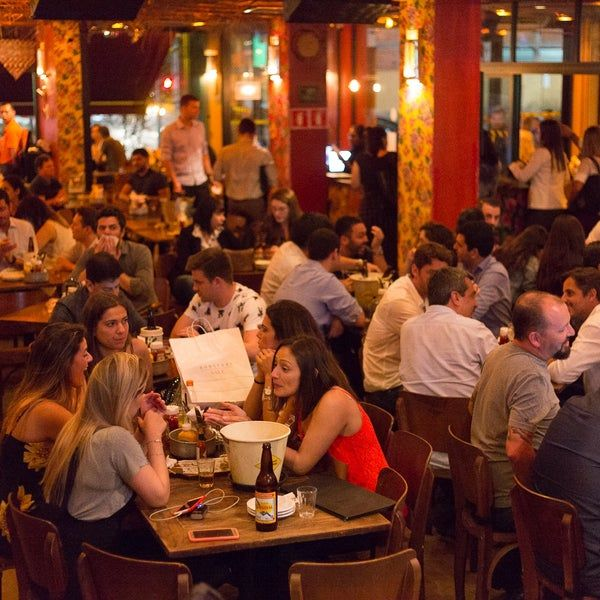
A Lively Dining RoomA buzzing, welcoming atmosphere where every table has its own story.
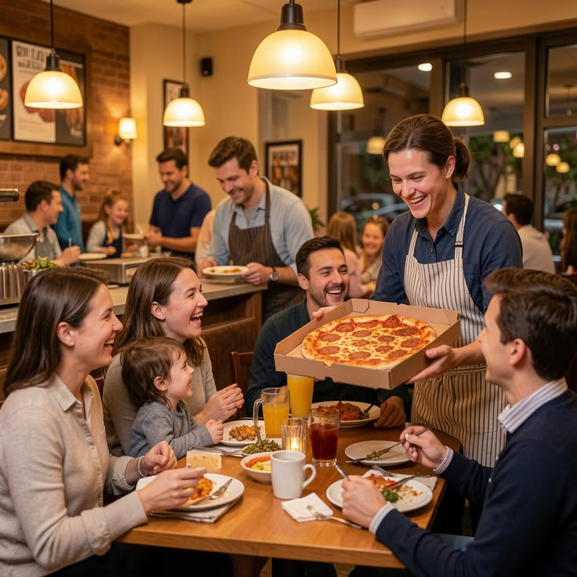
Fresh From the OvenOur team serving a hot, freshly baked pizza to a happy family.
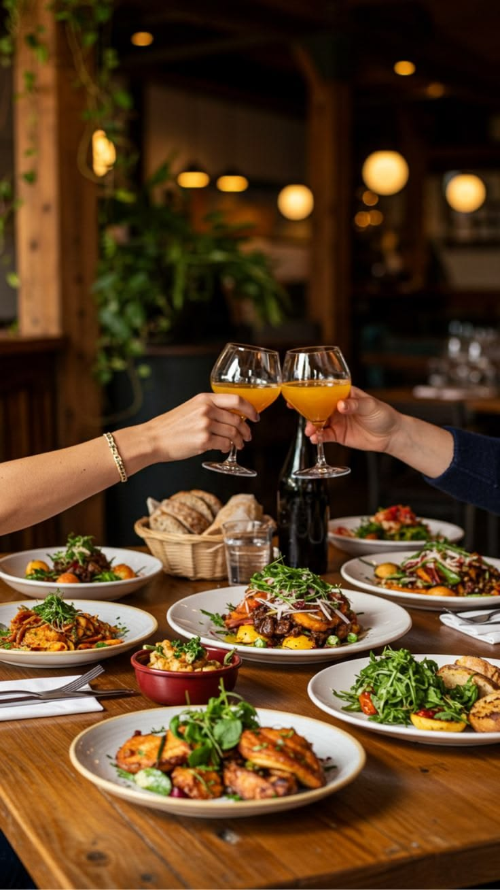
Cheers to Good TimesShared plates and raised glasses, perfect for celebrating together.
Attentive ServiceFriendly, attentive service from our team, right at your table.
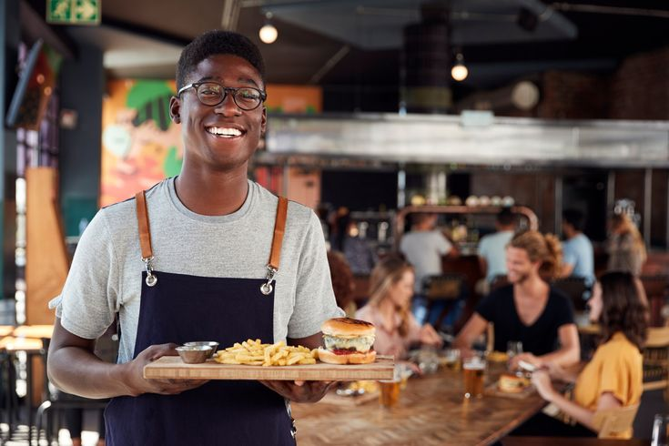
Served With a SmileOur friendly team bringing fresh burgers and crispy fries to your table.

Warm & Cozy InteriorSoft lighting, wooden finishes and comfortable seating for relaxed meals.
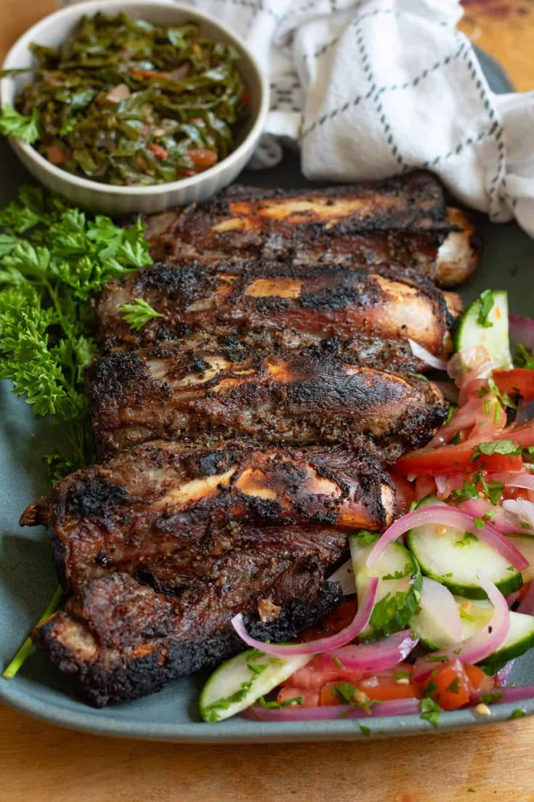
Nyama ChomaFlame-grilled meat served with fresh kachumbari.
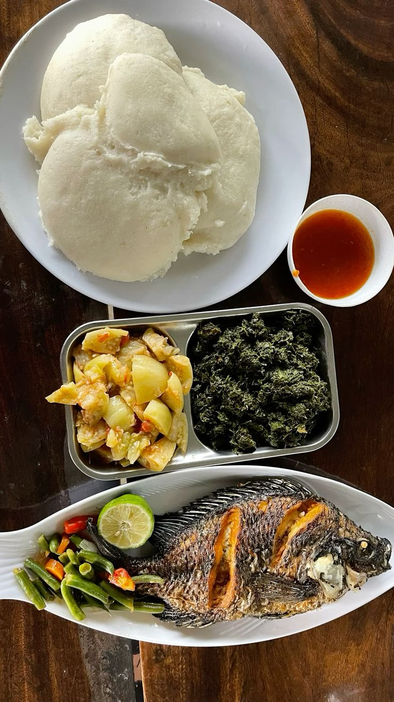
Ugali na SamakiSoft ugali served with fish, greens and a wedge of lime.
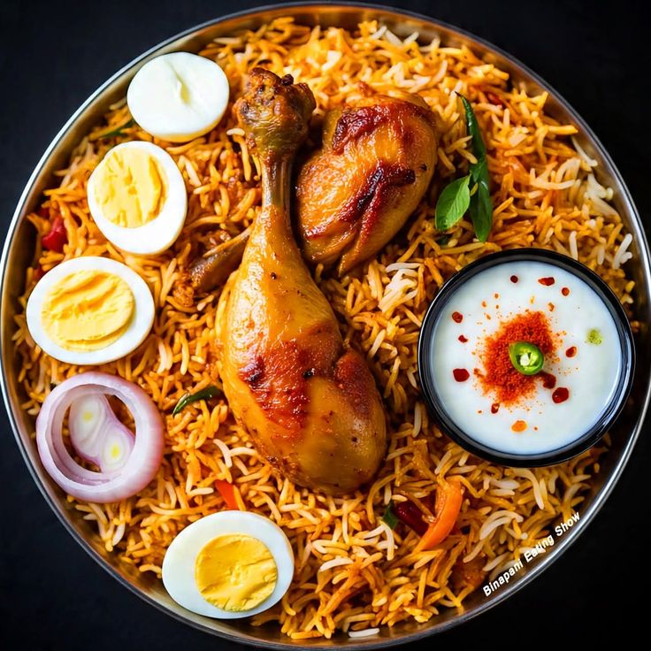
Biryani KukuFragrant spiced rice topped with juicy chicken, boiled eggs and a creamy dip.
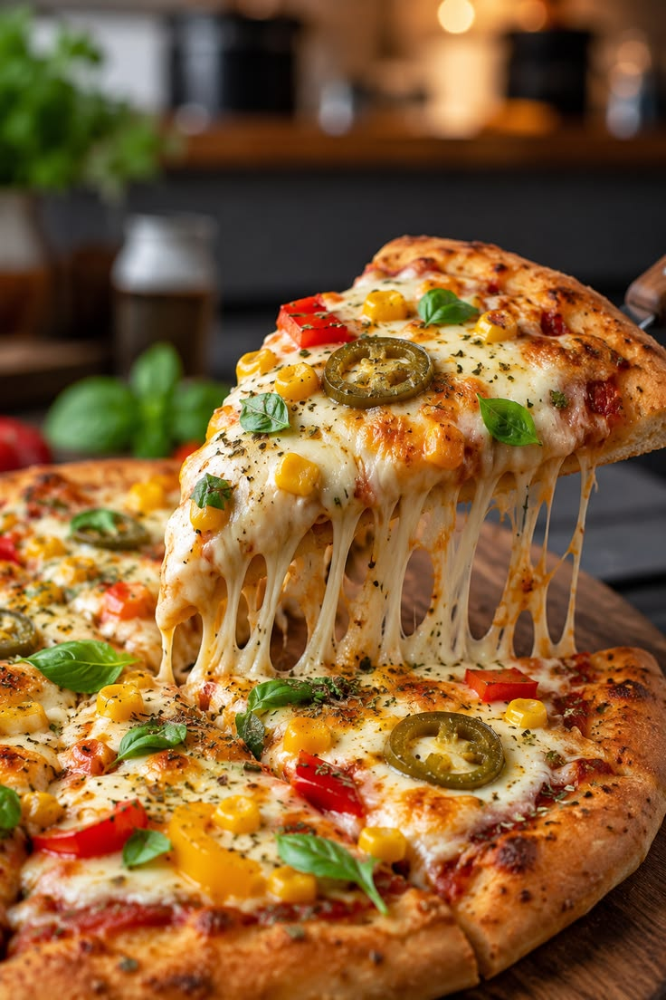
Cheesy Supreme PizzaStretchy melted cheese on a freshly baked pizza.
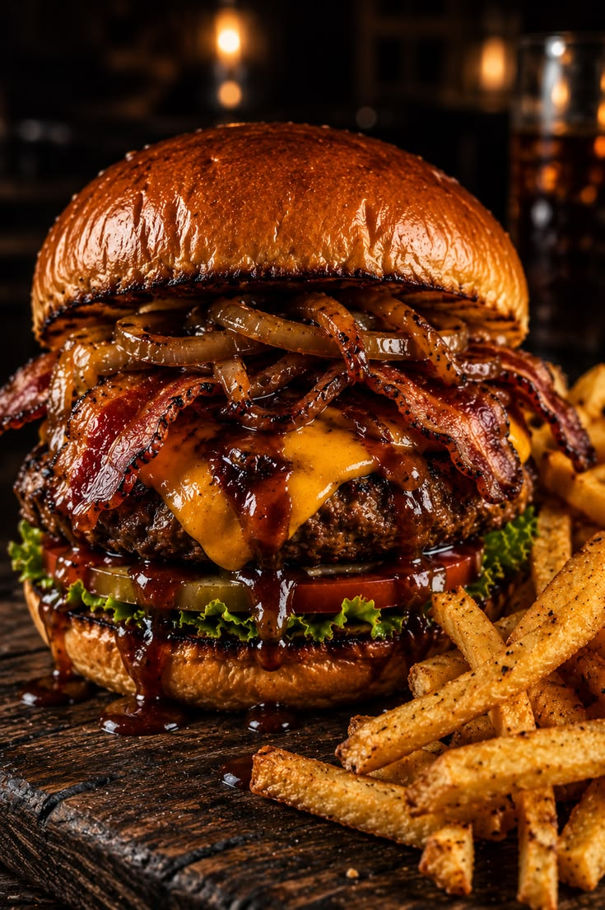
Classic Beef BurgerA juicy beef burger with melted cheese, served with crispy fries.
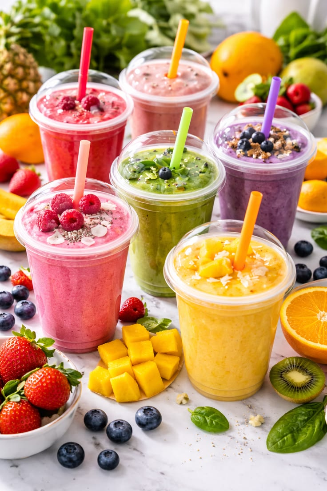
Fresh Tropical JuicesColourful juices and smoothies made from fresh fruit.

Celebration CakesSoft, moist cakes baked fresh for birthdays and special moments.
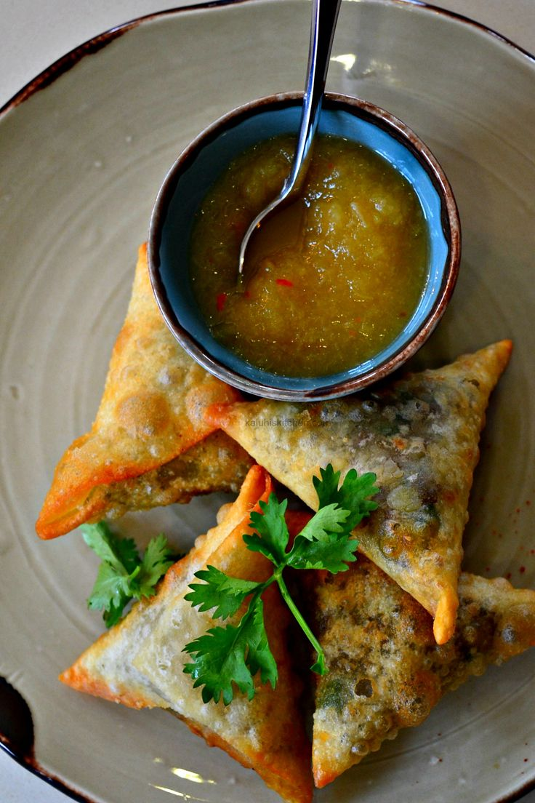
Crispy Meat SambusaGolden, crispy sambusa served with a tangy dipping sauce.